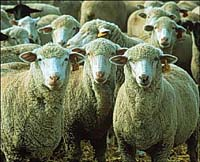
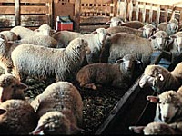
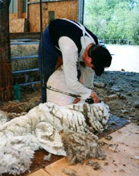

Sheep can be marketed through the Saskatchewan Sheep Development Board, a voluntary marketing agency. The main difference between development boards and associations is primarily in the membership structure. In an association, the producer belongs to the association, whereas development boards, like the Saskatchewan Sheep Development Board, belongs to the producers. The board operated under a specific mandate, enacted by parliament and is given responsibilities and authorities under the act. For example, the SSDB has a responsibility to develop programs and policies which potentially are beneficial or applicable to all producers, regardless of breed, size of flock or marketing focus. A development board does not discourage membership in associations. The board provides various services like training and seminars, designed to give producers practical experiences. Consumer education is another focus of the seminars. As well, production information is made available in the form of information phone lines, printed factsheets and a database of information. Other services include the sharing of information regarding sheep production supplies, policy direction and special projects.

Producers may choose to market through the SSDB and the board provides marketing services to those producers. The marketing board provides pricing or market updates, arranges sales and transportation, provides referral services and the office will provide brochures, meat charts and recipes. There is a small fee for this service. Producers have the choice of selling their lamb at auctions or to packing plants, however, a large percentage of lamb in Saskatchewan is sold directly from the farmer to the consumer. The SSDB annually arranges the sale of over 10,000 sheep, lambs and goats. The board of directors are producer elected and the directors serve a two year term for up to three terms.
The Saskatchewan Sheep Development Board assembles loads every two weeks at points throughout the province. Producers can phone the office as lambs approach market weight, and the office will arrange a drop-off point at a specified time and location. Sheep are also sold at various sales held in the fall throughout the province. Some livestock is purchased by buyers on-farm.
Lamb prices are commonly linked to the price of other red meat such as beef. However, prices do fluctuate throughout the year. Prices tend to be highest just before Easter. The traditional demand for lamb at Easter and the limited availability of lambs old enough for butchering results in high prices for lamb.

Wool prices throughout the world are unstable and producers often seek out alternative ways of selling their wool. Wool is a remarkable fiber; its ability to supply heat even when wet, and fire resistance are its most notable properties. Sales to local spinners and weavers, or, if sufficient amounts, marketing through a co-operative, is the most likely method for Saskatchewan wool. Wool is assembled at three depots located at Tompkins, Pilot Butte and Saskatoon. |